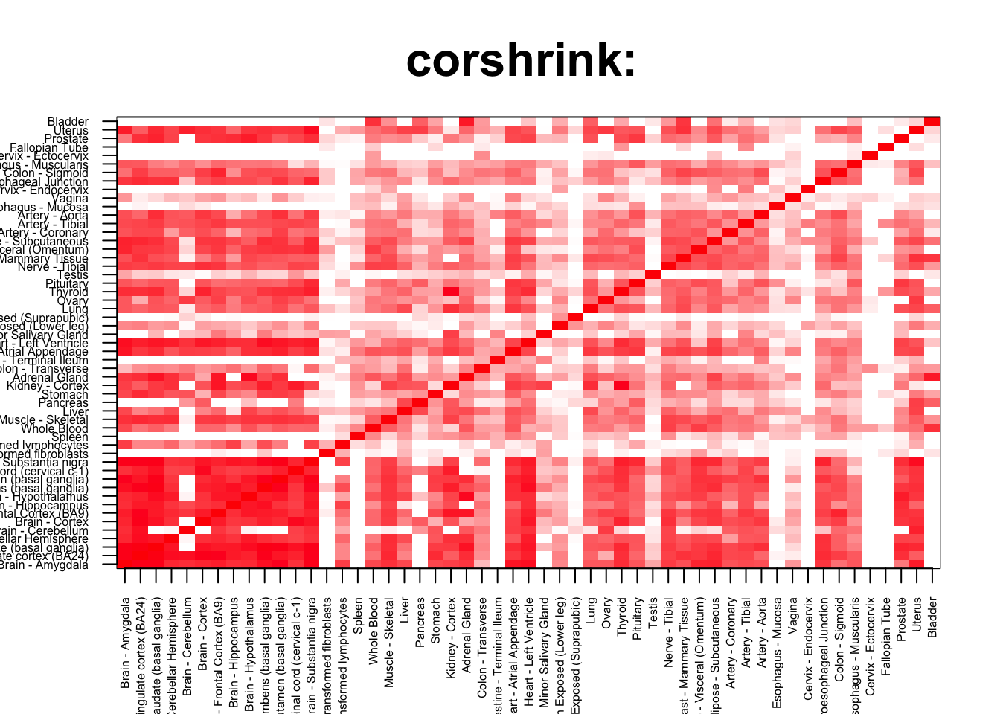
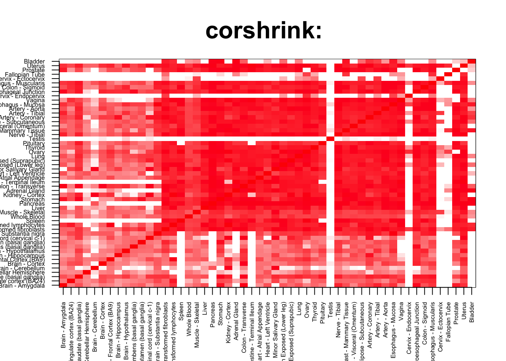
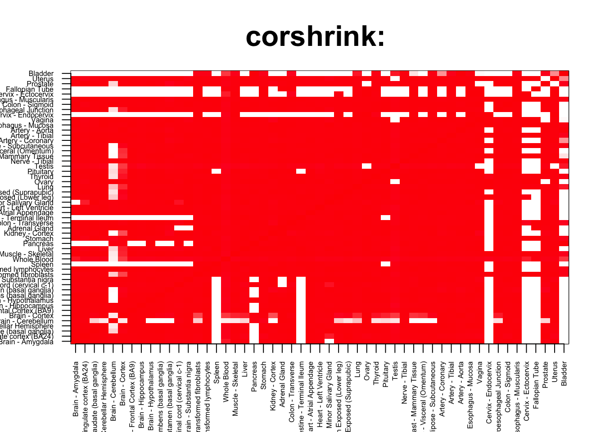
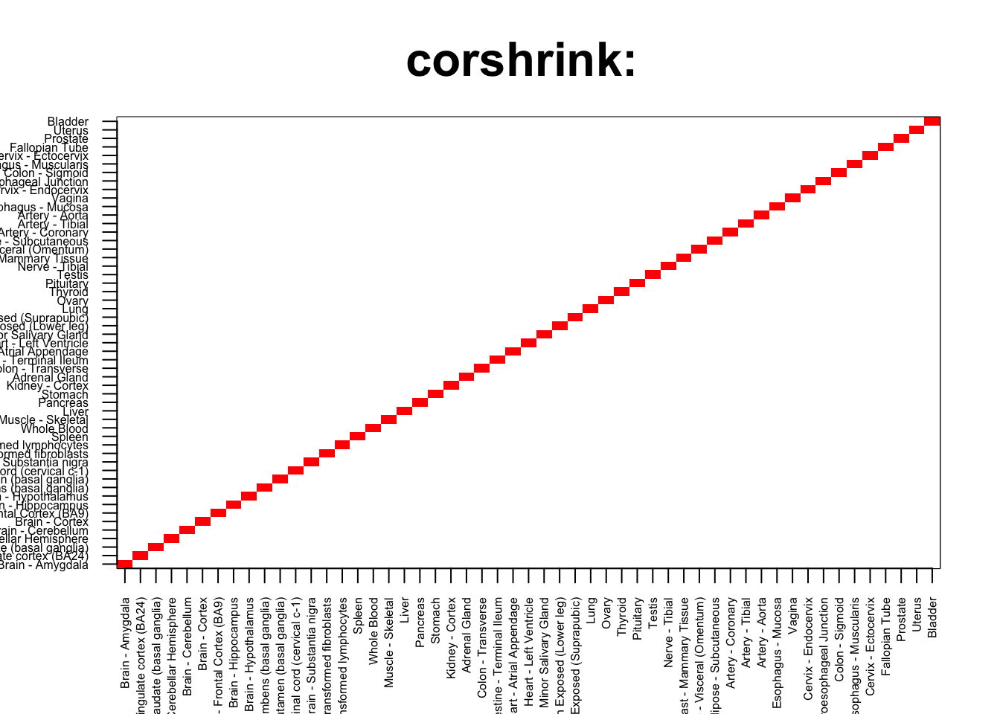

From the GSEA analysis of the CountClust clusters, it appeared that the genes driving the Blood cluster tend to show high correlation between the Brain tissues and the non Brain tissues in terms of expression patterns.
We check here if the top genes showing highest Brain versus non Brain correlation indeed show strong GO annotations for Whole Blood or not.
corshrink_data <- get(load("../output/ash_cor_only_voom_pearson_normal_gtex_tissues.rda"))
cor_data <- get(load("../output/cor_tissues_non_ash_voom_pearson.rda"))common_samples <- get(load("../output/common_samples.rda"))
tissue_labels <- read.table(file = "../data/GTEX_V6/samples_id.txt")[,3]
#library(data.table)
#data <- data.frame(fread("../data/GTEX_V6/cis_gene_expression.txt"))
#matdata <- t(data[,-c(1,2)])
gene_names <- as.character(read.table(file = "../data/GTEX_V6/gene_names_GTEX_V6.txt")[,1])
gene_names_1 <- as.character(sapply(gene_names, function(x) return(strsplit(x, "[.]")[[1]][1])))
U <- unique(tissue_labels)tab <- array(0, dim(corshrink_data)[3])
for(m in 1:dim(corshrink_data)[3]){
temp <- corshrink_data[order_index[1:13], order_index[-(1:13)],m]
temp1 <- corshrink_data[order_index[-(1:13)], order_index[-(1:13)],m]
tab[m] <- median(temp[row(temp) > col(temp)]) - median(temp1[row(temp1) > col(temp1)])
}
ordering_high <- order(tab, decreasing = TRUE)[1:100]
ordering_low <- order(tab, decreasing = FALSE)[1:100]top_gene <- gene_names_1[ordering_high[1]]
col=c(rev(rgb(seq(1,0,length=1000),1,seq(1,0,length=1000))),
rgb(1,seq(1,0,length=1000),seq(1,0,length=1000)))
image(as.matrix(corshrink_data[order_index,order_index, ordering_high[1]]),
col=col, main=paste0("corshrink: "), cex.main=2,
xaxt = "n", yaxt = "n", zlim=c(-1,1))
axis(1, at = seq(0, 1, length.out = 53), labels = U[order_index], las=2, cex.axis = 0.5)
axis(2, at = seq(0, 1, length.out = 53), labels = U[order_index], las=2, cex.axis = 0.5)
bottom_gene <- gene_names_1[ordering_low[1]]
col=c(rev(rgb(seq(1,0,length=1000),1,seq(1,0,length=1000))),
rgb(1,seq(1,0,length=1000),seq(1,0,length=1000)))
image(as.matrix(corshrink_data[order_index,order_index, ordering_low[1]]),
col=col, main=paste0("corshrink: "), cex.main=2,
xaxt = "n", yaxt = "n", zlim=c(-1,1))
axis(1, at = seq(0, 1, length.out = 53), labels = U[order_index], las=2, cex.axis = 0.5)
axis(2, at = seq(0, 1, length.out = 53), labels = U[order_index], las=2, cex.axis = 0.5)
high_brain_other_tissues_genes <- gene_names_1[ordering_high]
low_brain_other_tissues_genes <- gene_names_1[ordering_low]
write.table(cbind.data.frame(high_brain_other_tissues_genes), quote = FALSE, file = "../utilities/brain_other_tissues/high_brain_other_tissues.txt", row.names = FALSE, col.names = FALSE)
write.table(cbind.data.frame(low_brain_other_tissues_genes), quote = FALSE, file = "../utilities/brain_other_tissues/low_brain_other_tissues.txt", row.names = FALSE, col.names = FALSE)Pathway analysis
tab <- read.delim("../utilities/brain_other_tissues/pathway1_high.tab")
head(cbind.data.frame(tab$pathway, tab$q.value), 10)## tab$pathway
## 1 Keratinization
## 2 GPCR GroupI metabotropic glutamate receptor
## 3 Formation of the cornified envelope
## 4 sumoylation as a mechanism to modulate ctbp-dependent gene responses
## 5 Apoptotic cleavage of cellular proteins
## 6 Apoptotic cleavage of cell adhesion proteins
## 7 Apoptotic execution phase
## 8 sumoylation by ranbp2 regulates transcriptional repression
## 9 Platelet activation, signaling and aggregation
## 10 Role of Calcineurin-dependent NFAT signaling in lymphocytes
## tab$q.value
## 1 0.01614735
## 2 0.01614735
## 3 0.01614735
## 4 0.02234891
## 5 0.02234891
## 6 0.02918762
## 7 0.03349352
## 8 0.03349352
## 9 0.03349352
## 10 0.03637837GO analysis
tab <- read.delim("../utilities/brain_other_tissues/GO1_high.tab")
head(cbind.data.frame(tab$term_name, tab$q.value), 10)## tab$term_name tab$q.value
## 1 Z disc 0.0002484761
## 2 actin filament-based process 0.0014559433
## 3 sarcolemma 0.0002484761
## 4 I band 0.0002484761
## 5 cellular response to organonitrogen compound 0.0064052511
## 6 cell-cell junction 0.0011885143
## 7 cytoskeletal protein binding 0.0011019769
## 8 actomyosin structure organization 0.0063365876
## 9 supramolecular fiber organization 0.0040439780
## 10 actin cytoskeleton organization 0.0064052511tab <- read.delim("../utilities/brain_other_tissues/pathway1_low.tab")
head(cbind.data.frame(tab$pathway, tab$q.value), 10)## tab$pathway tab$q.value
## 1 BMAL1:CLOCK,NPAS2 activates circadian gene expression 1.453490e-05
## 2 Circadian Clock 8.927588e-05
## 3 Circadian Clock 8.927588e-05
## 4 Circadian rhythm pathway 2.142932e-04
## 5 RORA activates gene expression 6.679154e-04
## 6 Attenuation phase 6.679154e-04
## 7 Melatonin metabolism and effects 6.679154e-04
## 8 Circadian rhythm - Homo sapiens (human) 6.679154e-04
## 9 HSF1 activation 6.679154e-04
## 10 Regulation of HSF1-mediated heat shock response 6.679154e-04tab <- read.delim("../utilities/brain_other_tissues/GO1_low.tab")
head(cbind.data.frame(tab$term_name, tab$q.value), 10)## tab$term_name tab$q.value
## 1 maternal process involved in parturition 0.060646355
## 2 response to lipid 0.106774305
## 3 circadian regulation of gene expression 0.060646355
## 4 heterocyclic compound binding 0.008433897
## 5 nucleolar part 0.027587627
## 6 cellular response to steroid hormone stimulus 0.079084529
## 7 organic cyclic compound binding 0.008433897
## 8 cellular response to organic cyclic compound 0.079084529
## 9 response to steroid hormone 0.106774305
## 10 small nucleolar ribonucleoprotein complex 0.027587627tab <- array(0, dim(corshrink_data)[3])
for(m in 1:dim(corshrink_data)[3]){
temp <- corshrink_data[order_index[1:13], order_index[-(1:13)],m]
tab[m] <- median(temp[row(temp) > col(temp)])
}
ordering_high <- order(tab, decreasing = TRUE)[1:100]
ordering_low <- order(tab, decreasing = FALSE)[1:100]top_gene <- gene_names_1[ordering_high[1]]
col=c(rev(rgb(seq(1,0,length=1000),1,seq(1,0,length=1000))),
rgb(1,seq(1,0,length=1000),seq(1,0,length=1000)))
image(as.matrix(corshrink_data[order_index,order_index, ordering_high[1]]),
col=col, main=paste0("corshrink: "), cex.main=2,
xaxt = "n", yaxt = "n", zlim=c(-1,1))
axis(1, at = seq(0, 1, length.out = 53), labels = U[order_index], las=2, cex.axis = 0.5)
axis(2, at = seq(0, 1, length.out = 53), labels = U[order_index], las=2, cex.axis = 0.5)
bottom_gene <- gene_names_1[ordering_low[1]]
col=c(rev(rgb(seq(1,0,length=1000),1,seq(1,0,length=1000))),
rgb(1,seq(1,0,length=1000),seq(1,0,length=1000)))
image(as.matrix(corshrink_data[order_index,order_index, ordering_low[1]]),
col=col, main=paste0("corshrink: "), cex.main=2,
xaxt = "n", yaxt = "n", zlim=c(-1,1))
axis(1, at = seq(0, 1, length.out = 53), labels = U[order_index], las=2, cex.axis = 0.5)
axis(2, at = seq(0, 1, length.out = 53), labels = U[order_index], las=2, cex.axis = 0.5)
high_brain_other_tissues_genes <- gene_names_1[ordering_high]
low_brain_other_tissues_genes <- gene_names_1[ordering_low]
write.table(cbind.data.frame(high_brain_other_tissues_genes), quote = FALSE, file = "../utilities/brain_other_tissues/high_brain_other_tissues_2.txt", row.names = FALSE, col.names = FALSE)
write.table(cbind.data.frame(low_brain_other_tissues_genes), quote = FALSE, file = "../utilities/brain_other_tissues/low_brain_other_tissues_2.txt", row.names = FALSE, col.names = FALSE)tab <- read.delim("../utilities/brain_other_tissues/pathway2_low.tab")
head(cbind.data.frame(tab$pathway, tab$q.value), 10)## tab$pathway
## 1 Keratinization
## 2 EGFR1
## 3 Arrhythmogenic right ventricular cardiomyopathy (ARVC) - Homo sapiens (human)
## 4 Arrhythmogenic Right Ventricular Cardiomyopathy
## 5 Developmental Biology
## 6 Signaling mediated by p38-alpha and p38-beta
## 7 Posttranslational regulation of adherens junction stability and dissassembly
## 8 TGF-beta Receptor Signaling
## 9 Endochondral Ossification
## 10 Signaling by TGF-beta Receptor Complex
## tab$q.value
## 1 0.0001232673
## 2 0.0028254050
## 3 0.0028254050
## 4 0.0028254050
## 5 0.0028254050
## 6 0.0112934238
## 7 0.0206299278
## 8 0.0206299278
## 9 0.0219797193
## 10 0.0219797193tab <- read.delim("../utilities/brain_other_tissues/GO2_low.tab")
head(cbind.data.frame(tab$term_name, tab$q.value), 10)## tab$term_name tab$q.value
## 1 fascia adherens 1.601923e-05
## 2 cell-cell adherens junction 8.019538e-05
## 3 cell-cell junction 9.604157e-05
## 4 Sertoli cell differentiation 7.599560e-04
## 5 intermediate filament 1.947651e-04
## 6 regulation of cell proliferation 2.083509e-03
## 7 structural constituent of cytoskeleton 3.232347e-04
## 8 keratinocyte proliferation 2.083509e-03
## 9 Z disc 4.911086e-04
## 10 muscle structure development 1.255100e-03tab <- read.delim("../utilities/brain_other_tissues/pathway2_high.tab")
head(cbind.data.frame(tab$pathway, tab$q.value), 10)## tab$pathway
## 1 Allograft rejection - Homo sapiens (human)
## 2 Graft-versus-host disease - Homo sapiens (human)
## 3 Type I diabetes mellitus - Homo sapiens (human)
## 4 Endosomal/Vacuolar pathway
## 5 Autoimmune thyroid disease - Homo sapiens (human)
## 6 Viral myocarditis - Homo sapiens (human)
## 7 Proteasome Degradation
## 8 Antigen processing and presentation - Homo sapiens (human)
## 9 Allograft Rejection
## 10 Antigen Presentation: Folding, assembly and peptide loading of class I MHC
## tab$q.value
## 1 1.213829e-05
## 2 1.213829e-05
## 3 1.213829e-05
## 4 1.583926e-05
## 5 1.583926e-05
## 6 2.056675e-05
## 7 2.624854e-05
## 8 3.900576e-05
## 9 4.755511e-05
## 10 4.755511e-05tab <- read.delim("../utilities/brain_other_tissues/GO2_high.tab")
head(cbind.data.frame(tab$term_name, tab$q.value), 10)## tab$term_name
## 1 MHC protein complex
## 2 lumenal side of endoplasmic reticulum membrane
## 3 integral component of lumenal side of endoplasmic reticulum membrane
## 4 peptide antigen binding
## 5 ER to Golgi transport vesicle membrane
## 6 peptide binding
## 7 interferon-gamma-mediated signaling pathway
## 8 amide binding
## 9 antigen processing and presentation of peptide antigen
## 10 MHC class I protein complex
## tab$q.value
## 1 2.282876e-08
## 2 3.469741e-08
## 3 1.555401e-08
## 4 1.878534e-08
## 5 5.216098e-07
## 6 8.766997e-07
## 7 1.421373e-05
## 8 3.863407e-06
## 9 4.460830e-05
## 10 4.780472e-06This R Markdown site was created with workflowr